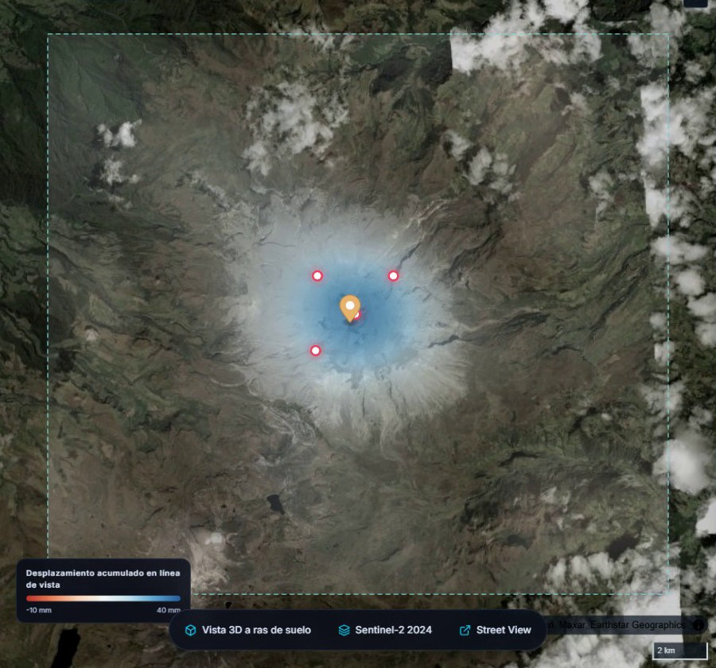

Propuesta de rediseño
SAROS
La página y sus animaciones, de principio a fin
 Norte de Santander · ladera acelerando
Bogotá · se hunde 2.9 cm/mes
Nevado del Ruiz · moderada
Norte de Santander · ladera acelerando
Bogotá · se hunde 2.9 cm/mes
Nevado del Ruiz · moderada
Monitoreo satelital para la prevención
Ve cómo se mueve la tierra antes de que sea tarde.
SAROS une el radar de NISAR con datos del territorio para anticipar deslizamientos, hundimientos e inundaciones en Colombia, y decir qué hacer.
zonas vigiladas
en Colombia
en atención alta
escenas NISAR sobre Colombia
Monitoreo satelital para la prevención
Ve cómo se mueve la tierra antes de que sea tarde.
Cómo funciona
Del radar a una decisión, en tres pasos
Observa
NISAR mide cada 12 días cuántos milímetros se movió el suelo.
Analiza
SAROS detecta aceleraciones y proyecta 30 y 90 días.
Previene
Avisos y acciones claras para la gente y las autoridades.
Monitoreo satelital para la prevención
Ve cómo se mueve la tierra antes de que sea tarde.
Nevado del Ruiz · moderada · toca para ver
Volcán
Nevado del Ruiz
Atención moderadaLo más importante
+14.9 mm/mes
El terreno se eleva. En 90 días llegaría a 76 mm.
Sectores expuestos
Qué hacer hoy

Línea de tiempo
Alertas
En vivo ColombiaAltaModeradaDeslizamientosNorte de Santander · hace 2 h
Cundinamarca · hace 1 día
Caldas y Tolima · hace 2 días
Sucre y Bolívar · hace 3 días
Últimos 30 días
Los avisos de SAROS no reemplazan las alertas oficiales de la UNGRD, el SGC y el IDEAM. Emergencias: 123.
Revisa grietas y drenajes de la ladera.
Principios del rediseño
Cada animación explica algo: de dónde viene la información y a dónde vas.
Del planeta al mapa y al 3D sin cortes: siempre sabes dónde estás.
Nivel, tendencia y qué hacer, antes que los datos técnicos.
Hoja inferior, toques grandes y avisos que llegan solos.
SAROS
Concepto de rediseño · imágenes reales del prototipo · cifras de demostración